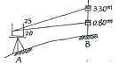
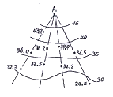
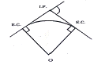
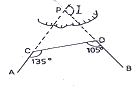
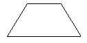

지적산업기사 (2008-03-02 기출문제)
1과목: 지적측량
1. 경위의측량방법과 교회법에 의한 지적삼각보조점의 관측과 계산에 대한 기준으로 틀린 것은?
- 관측은 20초독 이상의 경위의를 사용
- 수평각 관측은 2대회의 각 관측법
- 기지각과의 차는 ±50초 이내
- 삼각형 내각관측치의 합과 180도와의 차는 ± 50초 이내
(정답률: 50%)

2. 토지이동에 따른 도면 제도로 틀린 것은?
- 말소된 경계를 다시 등록하는 경우에는 말소 표시의 교차선 중심점을 기준으로 직경 2내지 3㎜의 붉은색 원으로 제도한다.
- 신규등록ㆍ등록전환 및 등록사항정정으로 도면에 경계ㆍ지번 및 지목을 새로이 등록하는 경우에는 이미 비치된 도면에 제도한다.
- 등록전환하는 경우에는 임야도의 당해 지번 및 지목을 말소하고, 그 내부를 붉은색으로 엷게 채색한다.
- 도곽선에 걸쳐있는 필지가 분할되어 도곽선 밖에 분할 경계가 제도된 경우에는 도곽선 내에 제도된 필지의 경계를 말소하고, 해당 도곽선 밖에 경계ㆍ지번 및 지목을 제도한다.
(정답률: 알수없음)
3. 도면의 축척이 1/600인 지역을 1/1200로 잘못 판단하여 면적측정을 한 결과 900m2로 계산 되었다. 올바른 면적은?
- 225m2
- 450m2
- 1800m2
- 3600m2
(정답률: 39%)
4. 표준길이보다 6㎝ 짧은 50m 줄자로 두 지점 사이의 거리 300m를 측정 하였다면 두 지점 사이의 실제거리는?
- 299.64m
- 300.36m
- 299.46m
- 300.63m
(정답률: 46%)
5. 다음 중 시오삼각형이 발생할 수 있는 것은?
- 방사법
- 현형법
- 교회법
- 도선법
(정답률: 46%)
6. 기초측량 및 세부측량을 위해 실시하는 지적 측량의 방법이 아닌 것은?
- 사진측량방법
- 수준측량방법
- 경위의측량방법
- 위성측량방법
(정답률: 70%)
7. 측판측량방법에 의한 세부측량에서 지상 경계선과 도상경계선의 부합 여부를 확인하는 방법이 아닌 것은?
- 지거법
- 도상원호 교회법
- 현형법
- 지상원호 교회법
(정답률: 28%)
8. 지적도근측량을 방위각법에 의할 때의 1도선의 폐색오차의 제한으로 맞는 것은?(단, n = 폐색변을 포함한 변의 수)
- 1등 도선은 ±√n분 이내, 2등 도선은 ±1.5√n분 이내
- 1등 도선은 ±1.5√n분 이내, 2등 도선은 ±2.0√n분 이내
- 1등 도선은 ±√n분 이내, 2등 도선은 ±2.0√n분 이내
- 1등 도선은 ±1.5√n분 이내, 2등 도선은 ±1.5√n분 이내
(정답률: 알수없음)
9. 측판측량에서 앨리데이드(Alidade)를 통하여 그림과 같이 관측했을 때 AB 간의 수평거리 D와 고저차 H의 값이 옳은 것은? (여기서, 기계고 I = 0.8m)

- D = 12.5m , H = 50.0m
- D = 20.0m , H = 10.5m
- D = 50.0m , H = 10.0m
- D = 50.0m , H = 12.5m
(정답률: 알수없음)
10. 축척 1/500 에서 지적도근측량시 도선의 총 길이가 3318.55m 일 때 2등도선인 경우 연결 오차의 허용범위는?
- 0.29m 이내
- 0.34m 이내
- 0.43m 이내
- 0.92m 이내
(정답률: 64%)
11. 지번과 지목의 제도에 대한 설명으로 적합하지 않은 것은
- 지번은 필지의 중앙에 제도한다.
- 필지가 좁고 길게 된 경우 왼쪽 또는 오른쪽으로 돌려 제도 할 수 있다.
- 지번은 고딕체, 지목은 명조체로 제도한다.
- 지번과 지목은 필지가 적은 경우 부호로 표기할 수 있다.
(정답률: 70%)
12. 지적삼각보조측량을 실시하기 위한 기지점의 좌표가 서영1 (X = 6963.82, Y = 3764.27), 서영2 (X = 6993.75, Y = 3534.28) 일 때 서영1에서 서영2의 방위각과 거리는? (단, 좌표의 단위는 m)
- 82° 35′08″와 231.93m
- 277° 24′52″와 229.99m
- 277° 24′52″와 231.93m
- 82° 35′08″와 229.99m
(정답률: 알수없음)
13. 좌표면적계산법으로 면적측정을 할 경우 산출면적의 계산단위(자리수)는?
- 1/10m2까지 계산
- 1/100m2까지 계산
- 1/500m2까지 계산
- 1/1000m2까지 계산
(정답률: 알수없음)
14. 배각법에 의한 지적도근측량에서 1등도선의 각 오차에 대한 공차를 구하는 식은? (단, n은 변수)
- ±√n분 이내
- ±1.5√n분 이내
- ±20√n초 이내
- ±30√n초 이내
(정답률: 알수없음)
15. 축척변경시행기간 중에 경계점표지의 설치를 위하여 예외적으로 실시할 수 있는 측량은?
- 등록전환측량
- 경계복원측량
- 토지분할측량
- 지적현황측량
(정답률: 55%)
16. 경위의측량방법으로 세부측량을 행하는 경우에 수평각의 측각공차는 1회각과 2회각의 평균값에 대한 교차를 얼마까지 허용 하는가?
- 40초 이내
- 30초 이내
- 20초 이내
- 10초 이내
(정답률: 알수없음)
17. 토지가 해면에 접하는 경우 경계설정 기준으로 맞는 것은?
- 측정당시 수위
- 최저만조위
- 평균해수위
- 최대만조위
(정답률: 알수없음)
18. 지적복구측량에 대한 설명으로 옳은 것은?
- 수해지역의 측량
- 축척변경지역의 측량
- 지적공부 멸실 지역의 측량
- 임야대장 등록지를 토지대장에 옮기는 측량
(정답률: 70%)
19. 경위의측량방법으로 세부측량을 시행할 때의 설명으로 옳은 것은?
- 수평각은 1대회의 방향관측법이나 3배각의 배각법에 의한다.
- 도선법 또는 교회법에 의한다.
- 연직각은 정반으로 1회 분단위로 독정하되 교차가 5분 이내인 때에는 평균치로 한다.
- 수평각 관측에서 1 방향각 측각 공차는 30초 이내로 한다.
(정답률: 70%)
20. 경계점좌표등록부시행지역이 아닌 축척 1/1200 시행지역에서 경계점에 대한 측량성과와 검사성과와의 연결오차의 허용범위는?
- 0.12m 이내
- 0.24m 이내
- 0.25m 이내
- 0.36m 이내
(정답률: 알수없음)
2과목: 응용측량
21. 두 변의 길이가 각각 38m 와 42m 이고 협각이 50° 14′45″인 밑면에 높이 7m 인 삼각기둥의 부피(m3)는?
- 3994.7m3
- 4028.7m3
- 4119.5m3
- 4294.5m3
(정답률: 알수없음)
22. 지형의 표시방법 중 태양 광선이 서북쪽에서 경사 45° 의 각도로 비친다고 가정하여 지표의 기복에 대하여 그 명암을 2~3색 이상으로 도면에 채색해 기복의 모양을 표시하는 방법은?
- 음영법
- 점고법
- 등고선법
- 채색법
(정답률: 알수없음)
23. GPS 측량의 특성을 설명한 것 중 맞지 않는 것은?
- 측점간 시통이 요구된다.
- 야간관측이 가능하다.
- 날씨에 영향을 거의 받지 않는다.
- 전리층 영향에 대한 보정이 필요하다.
(정답률: 72%)
24. 사진판독에 사용하는 요소가 아닌 것은?
- 색조
- 형상
- 과고감
- 촬영고도
(정답률: 10%)
25. 항공삼각측량의 표정에 사용되지 않는 것은?
- 공면조건식
- 부등각사상(Affine) 변환식
- 공선조건식
- 뉴톤(Newton) 변환식
(정답률: 알수없음)
26. 철도, 도로, 수로 등과 같이 폭이 좁고 길이가긴 시설물을 현지에 설치하기 위한 노선측량에서 원곡선을 설치할 때에 대한 설명으로 옳지 않은 것은?
- 철도, 도로 등에는 차량의 운전에 편리하도록 단곡선 보다는 복심곡선을 많이 설치하는 것이 좋다.
- 교통안전상의 관점에서 반향곡선은 가능하면 사용하지 않는 것이 좋고 불가피한 경우에는 양곡선 간에 충분한 길이의 완화 곡선을 설치한다.
- 두 원의 중심이 같은 쪽에 있고 반지름이 각기 다른 두 개의 원곡선을 설치하는 경우에는 완화곡선을 넣어 곡선이 점차로 변하도록해야 한다.
- 고속주행하는 차량의 통과를 위하여 직선부와 원곡선 사이나 큰 원과 작은 원 사이에는 곡률반경이 점차 변화하는 곡선부를 설치하는 것이 좋다.
(정답률: 알수없음)
27. 사진측량의 특수 3점이 아닌 것은?
- 주점
- 연직점
- 수평점
- 등각점
(정답률: 알수없음)
28. 그림과 같이 지성선 방향이나 주요한 방향의 여러 개의 관측선에 대하여 A로부터의 거리와 높이를 관측하여 등고선을 삽입하는 방법은?
- 직접법
- 종단점범(기준점법)
- 횡단점법
- 좌표점법(사각형 분할법)
(정답률: 64%)
29. 지표면의 비고가 100m 의 구릉지에서 초점 거리가 15.3㎝인 사진기로 촬영한 사진이 23㎝×23㎝의 크기이며 축척이 1/20000 이었다. 이 사진의 비고에 의한 최대 변위는?

- 16.3㎜
- 16.7㎜
- 5.3㎜
- 5.7㎜
(정답률: 알수없음)
30. 두 갱구의 좌표가 각각 A(4273.60, 2736.20), B(3564.50, 1683.20)이고 높이 차가 123.40m 인 경우 이 갱도의 경사 거리는? (단, 좌표의 단위는 m 임)
- 1277.38m
- 1275.48m
- 1271.50m
- 1269.52m
(정답률: 알수없음)
31. 그림과 같은 원곡선에 있어서 원곡선의 반경이 230m 이고, 두 직선의 교각이 57° 00′00″일 때 곡선의 시점 (B. C.)에서 교차점 (I. P.) 점까지의 거리는 얼마인가?

- 140.40m
- 130.43m
- 124.88m
- 121.80m
(정답률: 46%)
32. AC와 BD 사이에 곡선 설치를 하려고 하는데 장애물 때문에 교회점 P를 구할 수 없어 ∠ACD와 ∠BDC 를 측정하였다. 교회각 (I)는 얼마인가?

- 60°
- 75°
- 120°
- 240°
(정답률: 알수없음)
33. 다음 중 터널측량의 갱내측량에서 사용되지 않는 장비는?
- 트랜싯
- 레벨
- 광파측거기
- GPS 측량기
(정답률: 알수없음)
34. 초점거리 152㎜의 카메라로 찍은 축척 1/6000의 항공사진의 평균 촬영 고도(H)는?
- 750m
- 912m
- 1⑤2m
- 1500m
(정답률: 알수없음)
35. 수준측량에서 시준거리를 일정하게 하여 동일 조건하에서 측량하면 그 오차는 이론적으로 무엇에 비례하게 되는가?
- 관측회수의 역수
- 관측점수의 제곱
- 관측값의 2배수
- 관측거리의 제곱근
(정답률: 64%)
36. 두 점 간의 고저차를 구하는 방법에 해당하지않는 것은?
- 직접 수준 측량
- 기압 수준 측량
- 항공 사진 측량
- 지거 수준 측량
(정답률: 20%)
37. 사지측량에서 고저차(h) 와 시차차(△p)의 관계로 옳은 것은?
- 고저차는 시차차에 비례한다.
- 고저차는 시차차에 반비례한다.
- 고저차는 시차차의 제곱에 비례한다.
- 고저차는 시차차의 제곱에 반비례한다.
(정답률: 50%)
38. GPS가 채택하고 있는 좌표계는 다음 중 어느 것을 기준으로 하고 있는가?
- WGS-84 좌표계
- WGS-72 좌표계
- ITRF-92 좌표계
- WGS-80 좌표계
(정답률: 82%)
39. 수준측량에서 중간시가 많을 경우에 편리한 야장기입법은?
- 고차식
- 승강식
- 복합식
- 기고식
(정답률: 알수없음)
40. 다음 중 완화곡선에 해당하지 않는 것은?
- 3차 포물선
- 복심곡선
- 클로소이드 곡선
- 램니스케이트
(정답률: 73%)
3과목: 토지정보체계론
41. 하나의 주제에 관한 자료를 포함하고 있는 공간자료파일을 의미하는 것은?
- 레이어
- 데이터베이스
- 래스터
- 벡터
(정답률: 37%)
42. 도형정보의 기본요소와 거리가 먼 것은?
- 면
- 높이
- 점
- 선
(정답률: 알수없음)
43. 지적전산용 네트워크 기본 장비와 거리가 가장 먼 것은?
- 교환 장비
- 전송 장비
- 보안 장비
- DLT 장비
(정답률: 알수없음)
44. 벡터 데이터의 특징에 해당되지 않는 것은?
- 여러 레이어의 중첩이나 분석에 기술적으로 어려움이 수반된다.
- 장비의 가격이 고가인 하드웨어와 소프트웨어가 요구되므로 초기비용이 많이 소요된다
- 네트워크와 연계 구현이 곤란하여 시각적 효과가 낮다.
- 그래픽 구성요소는 각기 다른 위상구조를 가지므로 분석에 어려움이 크다.
(정답률: 50%)
45. 토지정보시스템 구축에 있어 지적도와 지형도를 중첩할 때 비연속 도면을 수정하는데 가장 효율적인 자료는?
- 정사항공영상
- TIN 모형
- 수치표고모델
- 토지이용현황도
(정답률: 37%)
46. 한국토지정보체계(KLIS)에서 지적공부관리 시스템의 기능에 해당되지 않는 것은?
- 지적공부정리파일(*.DAT)의 생성 기능
- 개인별 토지소유 현황을 조회하는 기능
- 토지이동에 따른 변동내역을 조회하는 기능
- 소유권연혁에 대한 오기정정 기능
(정답률: 알수없음)
47. 토지정보시스템의 기본적인 구성요소와 거리가 먼 것은?
- 데이터베이스
- 하드웨어
- 소프트웨어
- 보안시스템
(정답률: 알수없음)
48. 지적공부정리 신청이 있을 때에 검토하여 정리하여야 할 사항에 속하지 않는 것은?
- 신청사항과 지적전산자료의 일치 여부
- 지적측량성과자료의 적정 여부
- 첨부된 서류의 적정 여부
- 지적측량 입회의 확인 여부
(정답률: 알수없음)
49. 다음 중 DXF 포맷에 대한 설명으로 틀린 것은?
- ASCII 형태로 구성되어 있다.
- 위상정보가 결여되어 있다.
- 속성정보를 포함하고 있지 않다.
- 광범위한 자료의 호환을 위한 규약으로서 자료에 관한 정보를 전달하기 위한 언어다.
(정답률: 알수없음)
50. 벡터식 자료구조 중 선사상에 대한 설명으로 틀린 것은?
- 지도상 표현되는 1차원 요소이다.
- 길이와 방향을 가지고 있다.
- 일반적으로 두께를 가지고 있다.
- 노드에서 시작하여 노드에서 끝난다.
(정답률: 30%)
51. 토지정보시스템에서 속성정보로 취급할 수 있는 것은?
- 토지 간의 인접관계
- 토지 간의 포함관계
- 토지 간의 위상관계
- 토지의 지목
(정답률: 알수없음)
52. 지적정보센터의 효율적인 관리 및 운영을 위한 토지 관련자료 등에 속하지 않는 것은?
- 지적위성기준점관측자료
- 건축물과세평가자료
- 주민등록전산자료
- 공시지가전산자료
(정답률: 43%)
53. 지적 전산정보처리조직에서 사용자권한 등록 파일에 등록하는 사용자 권한으로 틀린 것은?
- 지적 편집도의 승인
- 사용자의 신규등록
- 사용자등록의 변경 및 삭제
- 지적 전산코드의 입력ㆍ수정 및 삭제
(정답률: 알수없음)
54. 도시개발사업에 따른 지구계 분할시 지구계 구분 코드 입력 사항으로 알맞은 것은?
- 지구내 0, 지구외 1
- 지구내 0, 지구외 2
- 지구내 1, 지구외 0
- 지구내 2, 지구외 0
(정답률: 알수없음)
55. 지적재조사 사업이 필요한 이유로 가장 거리가 먼 것은?
- NGIS 구축
- 지적도면의 노후화
- 지적불부합지의 과다
- 통일원점의 본원적 문제
(정답률: 28%)
56. 다음 중 데이터베이스 관리 시스템(DBMS) 및 데이터베이스 관리용 소프트웨어는?
- ArcView
- Oracle
- Automap
- Geomedia
(정답률: 42%)
57. 국가지리정보체계의 기본지리정보에 해당하지 않는 것은?
- 항공
- 지형
- 지적
- 해양 및 수자원
(정답률: 40%)
58. 효율적으로 공간데이터를 분석, 처리하기 위한 고려사항으로 가장 거리가 먼 것은?
- 공간 데이터의 분포 및 군집성
- 하드웨어 설치 장소
- 변화하는 공간데이터의 갱신
- 효율적인 저장 구조
(정답률: 알수없음)
59. 지적속성정보의 수집은 주로 신규자료와 변경 자료를 대상으로 한다. 이러한 속성정보를 수집 하는 방법에 해당 되지 않는 것은?
- 토지소유자에 의한 전산 입력
- 담당공무원의 직권
- 관계기관의 통보
- 민원신청
(정답률: 30%)
60. SQL 언어에 대한 설명으로 바른 것은?
- order는 보통 질의어에서 처음에 나온다.
- select 다음에는 테이블명이 나온다.
- from 다음에는 필드명이 나온다.
- where 다음에는 조건식이 나온다.
(정답률: 알수없음)
4과목: 지적학
61. 다음 중 지적도와 임야도의 등록사항이 아닌 것은?
- 면적
- 지번
- 경계
- 지목
(정답률: 알수없음)
62. 지적불부합지의 유형 중에서 비교적 규모가 크고 집단적이어서 행정처리상 큰 어려움을 초래하는 유형은?
- 중복형
- 공백형
- 편위형
- 불규칙형
(정답률: 46%)
63. 다음 중 토지소유권 보장에 가장 알맞은 지적제도는?
- 법지적
- 세지적
- 경제지적
- 과세지적
(정답률: 알수없음)
64. 경국대전에 토지가옥의 매매시 얼마 이내에 입안하도록 되어 있는가?
- 1개월
- 3개월
- 100일
- 150일
(정답률: 알수없음)
65. 지적에서의 경계를 설명한 것으로 타당치 않은 것은?
- 법률상의 경계
- 자연상태로의 경계
- 지적도상의 경계
- 인위적인 경계
(정답률: 알수없음)
66. 토지조사시 사정사항에 해당되는 것은?
- 경계, 면적
- 경계, 소유자
- 면적, 소유자
- 지목, 경계
(정답률: 28%)
67. 지적공부에 등록된 경계의 특성으로서 경계 불가분의 원칙이 적용되는 가장 큰 이유는?
- 경계의 중앙 선택 위치
- 경계점간 직선 연결
- 위치만 존재
- 설치자의 소속
(정답률: 알수없음)
68. 다음 중 토지조사사업의 주된 내용으로 거리가 먼 것은?
- 토지의 소유권 조사
- 토지의 행정구역 조사
- 토지의 외모 조사
- 토지의 가격 조사
(정답률: 알수없음)
69. 지번의 설정사유로 맞지 않는 것은?
- 다른 토지와의 식별용이
- 당해 토지의 개별성 및 특별성 부여
- 위치의 추측용이
- 토지이용의 효율화 및 토지이용 목적 표상
(정답률: 알수없음)
70. 다음 중 시대와 연결이 잘못된 것은?
- 신라 - 장적
- 백제 - 도적
- 고구려 - 능역도
- 고조선 - 정전제
(정답률: 알수없음)
71. 임야조사사업 당시 임야 대장 등록지의 사정기관은?
- 도지사
- 임야심사위원회
- 임시 토지조사국
- 고등토지조사위원회
(정답률: 28%)
72. 우리나라 대부분의 일반 농촌지역에서 주로 사용되고 있는 부번(負蠜)방식으로 토지의 배열이 불규칙한 때에 가장 편리한 방식은?
- 사행식(蛇行式)
- 기우식(奇偶式)
- 교호식(交互式)
- 단지식(團地式)
(정답률: 47%)
73. 양전의 순서에 따라 1필지마다 천자문(千字文)의 자(字)번호를 부여하였던 제도는?
- 경묘법
- 결부법
- 일자오결제
- 집결제
(정답률: 59%)
74. 토지조사 및 임야조사 당시(1910년~1924년)의 지적도 또는 임야도의 축척에 해당 되지 않는 것은?
- 1/1,000
- 1/1,200
- 1/2,400
- 1/3,000
(정답률: 알수없음)
75. 지적제도가 공시제도로서 가장 중요한 기능이라 할 수 있는 것은?
- 토지 등기의 기초
- 토지 평가의 기초
- 토지 과세의 기준
- 토지 거래의 기준
(정답률: 46%)
76. 신라시대에 다음 그림과 같은 형태의 토지를 가리키는 것은?

- 방전(方田)
- 규전(圭田)
- 제전(梯田)
- 구고전(句股田)
(정답률: 알수없음)
77. 우리나라 지적제도의 원칙과 관계가 먼 것은?
- 적극적 등록주의
- 인적 편성주의
- 공시의 원칙
- 실질적 심사주의
(정답률: 60%)
78. 지목의 유형에 있어서 지표면의 형태, 토지의 고저, 수륙의 분포상태 등 땅이 생긴 모양에 따라 결정한 지목으로 맞는 것은?
- 용도지목
- 지형지목
- 토성지목
- 산업지목
(정답률: 알수없음)
79. 경국대전 호전에 조세의 정확성을 유지하기 위하여 일정기간이 되면 토지를 재측량하여 양안을 개편토록 하였는데 이 기간의 원칙적인 주기는?
- 5년
- 10년
- 15년
- 20년
(정답률: 알수없음)
80. 고려시대 토지를 기록하는 대장에 해당되지않는 것은?
- 도전장
- 양전도장
- 도전정
- 구양안
(정답률: 47%)
5과목: 지적관계
81. 지적공부를 열람하거나 그 등본을 교부받고자 하는 경우 소관청에 수수료 납부방법으로 틀린것은?
- 수입증지
- 수입인지
- 전자화폐
- 전자결제
(정답률: 알수없음)
82. 다음 중 지적도의 축척에 해당되지 않는 것은?
- 1/500
- 1/1200
- 1/2500
- 1/3000
(정답률: 75%)
83. 다음에서 수도용지에 해당되지 않는 것은?
- 물을 정수하여 공급하기 위한 취수시설의 부지
- 물을 정수하여 공급하기 위한 배수시설의 부지
- 물을 정수하여 공급하기 위한 도수(導水) 시설의 부지
- 공동우물
(정답률: 알수없음)
84. 토지의 지목을 도면에 표기할 때 사용하는 부호로 적합하지 않은 것은?
- 공장용지 - 장
- 염전 - 염
- 주차장 - 주
- 유지 - 유
(정답률: 알수없음)
85. 축척변경 위원회의 구성에 대한 내용으로 옳은 것은?
- 5인 이상 10인 이내의 위원으로 구성
- 10인 이상 15인 이내의 위원으로 구성
- 15인 이상 25인 이내의 위원으로 구성
- 25인 이상 30인 이내의 위원으로 구성
(정답률: 64%)
86. 지적기술자에 대한 징계 요구권자가 아닌 자는?
- 시ㆍ도지사
- 소관청
- 대한지적공사
- 대한측량협회
(정답률: 46%)
87. 지적측량으로 인하여 타인에게 손실을 끼쳤을 경우 그 손실보상에 대한 설명으로 옳은 것은?
- 어떠한 경우에도 그 행위자가 속한 소관청이 보상하여야 한다.
- 지적측량이 특정인을 위한 것인 경우에는 그로 인한 손실은 그 특정인이 보상하여야 한다.
- 손실을 보상하여야 할 자 또는 손실을 입은 자는 규정에 의한 협의를 할 수 없는 때에는 중앙지적위원회에 재결을 신청할 수있다
- 어떠한 경우에도 행위를 행한 지적측량수행자가 그 손실을 보상하여야 한다.
(정답률: 10%)
88. 지적공부에 기재된 등록사항의 정정으로 인접 토지의 경계가 변경되는 경우 그 정정은 무엇에 의해야 하는가?
- 등기필증등본
- 토지대장 및 지적도
- 소관청 직권
- 인접 토지소유자의 승낙서 또는 확정판결서 정본
(정답률: 알수없음)
89. 다음 중 지적법상의 용어 정의로서“토지의 이동”이라고 할 수 없는 것은?
- 토지대장에 등록된 소유자가 달라지는 것
- 지적도에 등록된 경계가 달라지는 것
- 토지대장에 등록된 지번이 달라지는 것
- 경계점좌표등록부에 등록된 좌표가 달라지는 것
(정답률: 알수없음)
90. 소관청에서 지번변경을 위하여 승인신청을 하는 경우 첨부서류에 해당되지 않는 것은?
- 지번별조서
- 지적도 사본
- 임야도 사본
- 색인표
(정답률: 알수없음)
91. 소관청은 토지대장 또는 임야대장에 등록하는 토지가 부동산등기법에 의하여 대지권등기가 된 때에는 무엇을 비치해야 하는가?
- 공유지연명부
- 대지권등록부
- 지번색인표
- 지적공부등록현황집계표
(정답률: 알수없음)
92. 다음 중 지적측량업자의 결격사유에 해당되지 않는 자는?
- 금치산자
- 한정치산자
- 파산자로서 복권되지 아니한 자
- 지적측량업의 등록이 취소된 후 2년이 경과되지 아니한 자
(정답률: 알수없음)
93. 공유지연명부의 등록사항이 아닌 것은?
- 소유자의 성명 또는 명칭
- 토지의 면적
- 토지의 소재
- 소유권 지분
(정답률: 34%)
94. 지적법에 의해 1년이하의 징역 또는 500만원 이하의 벌금에 처해지는 경우는?
- 등록전환의 신청의무를 게을리 한 자
- 신규등록의 신청의무를 게을리 한 자
- 토지의 이동신청을 허위로 한 자
- 지적측량에 의한 토지의 일시적 사용을 정당한 사유 없이 방해한 자
(정답률: 알수없음)
95. 지적측량업자의 지위승계신고서에 첨부해야 할 서류가 아닌 것은?
- 보유장비 명세서
- 소속기술자의 명단 및 기술자격증 사본
- 양도의 경우에는 양도ㆍ양수계약서 사본
- 지적측량업무계획서
(정답률: 알수없음)
96. 다음 중 합병의 금지사유가 아닌 것은?
- 합병하고자 하는 각 필지의 지목이 서로 다른 때
- 합병하고자 하는 각 필지의 지적도 및 임야 도의 축척이 서로 다른 때
- 합병하고자 하는 각 필지의 지반이 연속되지 않은 때
- 합병하고자 하는 각 필지의 토지가 등기된 토지인 경우
(정답률: 알수없음)
97. 지적공부의 복구절차 중 복구자료의 조사 또는 복구측량 등이 완료되어 지적공부를 복구하고자 하는 경우 토지의 표시 등을 게시하여야 하는데 이때 게시장소와 기간은?
- 일간신문에 1일간 게시
- 소관청에 30일간 게시
- 등기소와 읍면게시판에 10일간 게시
- 시ㆍ군ㆍ구의 게시판에 15일 이상 게시
(정답률: 80%)
98. 축척변경위원회의 심의ㆍ의결 사항이 아닌 것은?
- 토지표시사항의 결정에 관한 사항
- 축척변경시행계획에 관한 사항
- 지번별 제곱미터당 금액의 결정과 청산금의 산정에 관한 사항
- 청산금의 이의신청에 관한 사항
(정답률: 알수없음)
99. 향교의 건축물 부지의 지목은 어느 것인가?
- 사사지
- 사적지
- 종교용지
- 대
(정답률: 37%)
100. 소관청은 축척변경에 따른 청산금의 결정을 공고한 날로부터 몇 일 이내에 토지소유자에게 청산금의 납부고지 또는 수령통지를 하여야 하는가?
- 7일 이내
- 10일 이내
- 14일 이내
- 20일 이내
(정답률: 알수없음)